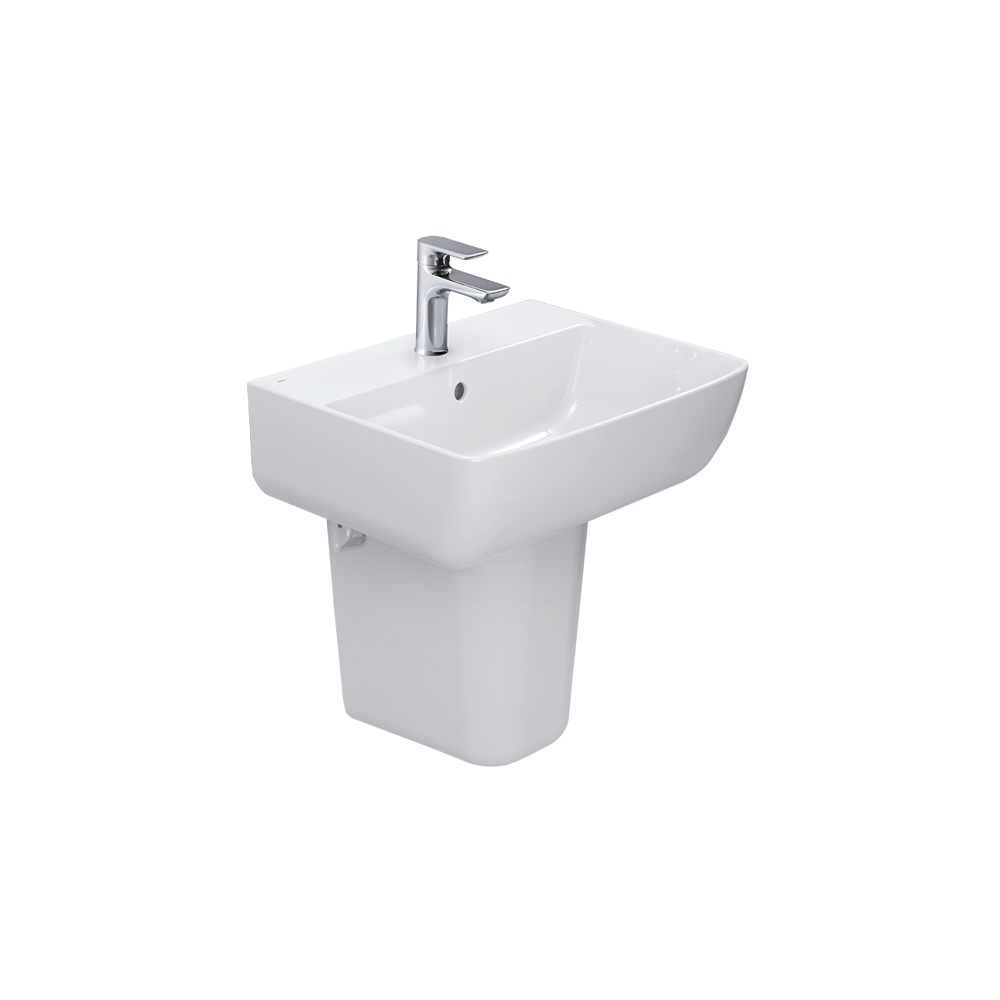
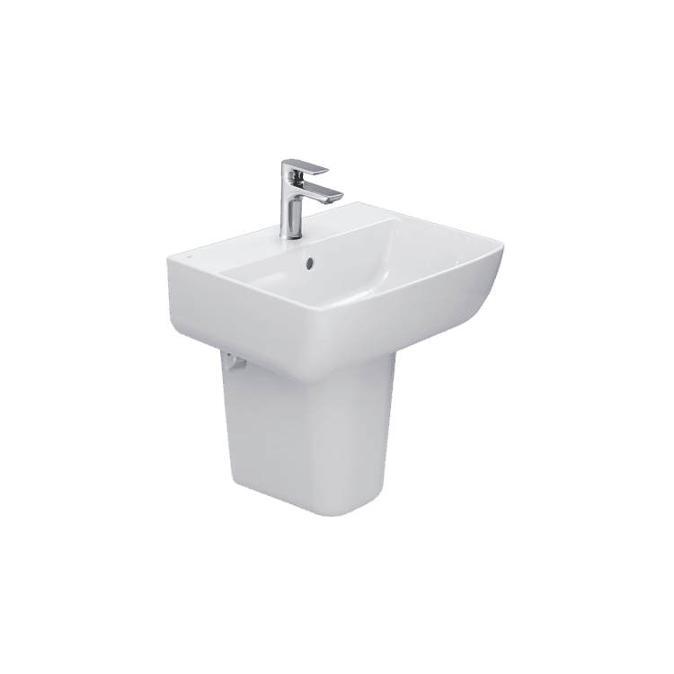
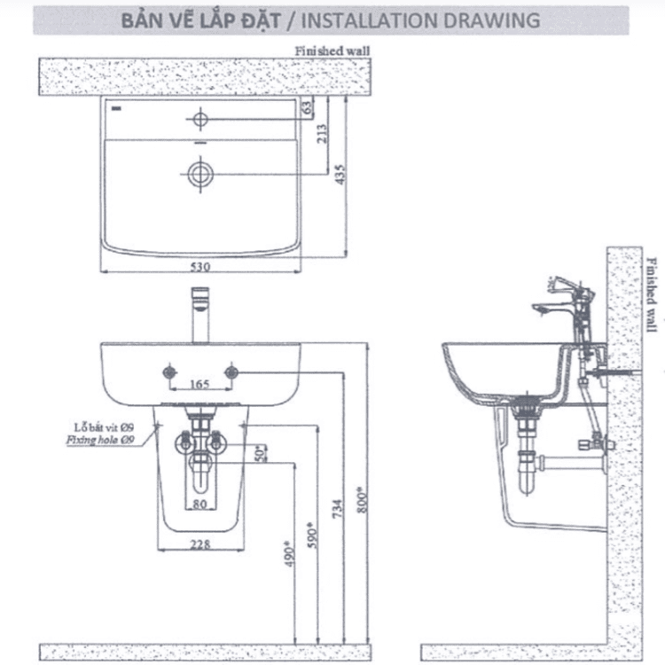

Chậu rửa treo tường INAX L-312V (EC/FC) được thiết kế hiện đại, trang nhã, là lựa chọn tối ưu cho phòng tắm nhỏ và vừa. Sản phẩm làm từ sứ cao cấp phủ men sáng bóng, bền bỉ chuẩn Nhật, tích hợp lỗ xả tràn tiện lợi cùng hai tùy chọn lỗ gắn vòi lavabo (EC: 3 lỗ - 1 tay gạt, FC: 1 lỗ), mang đến trải nghiệm sử dụng linh hoạt và tiện nghi cho người dùng.Thiết kế chậu rửa treo tường INAX L-312V (EC/FC)Sản phẩm mang phong cách hiện đại, trang nhã, giúp không gian phòng tắm trở nên tinh tế hơn.Chậu rửa được thiết kế dạng treo tường gọn gàng, giúp tiết kiệm diện tích và tối ưu không gian sử dụng.Các đường nét thiết kế thanh thoát, tinh gọn, góp phần tạo điểm nhấn sang trọng cho phòng tắm.Nhà sản xuất bố trí lỗ vòi linh hoạt với 2 phiên bản: EC (3 lỗ gắn vòi 1 tay gạt) và FC (1 lỗ), đáp ứng nhu cầu đa dạng của người dùng.Tính năng nổi bật của chậu rửa treo tường INAX L-312V (EC/FC)Vệ sinh dễ dàng: Bề mặt chậu được thiết kế bo cong hợp lý, giúp lau rửa nhanh gọn và hạn chế bám bẩn ở các khe cạnh.Men sáng bóng, chống bám bẩn: Lớp men sứ trắng mịn, sáng đẹp, độ bền cao đạt tiêu chuẩn Nhật Bản. Sản phẩm có độ trơn bóng, giúp việc vệ sinh dễ dàng hơn.Thoát nước nhanh chóng: Lòng chậu có độ dốc hợp lý và lỗ thoát nước rộng, giúp nước chảy đi nhanh, không đọng lại, đảm bảo khô thoáng sau mỗi lần sử dụng.Tích hợp lỗ chống tràn: Hệ thống chống tràn được bố trí tiện lợi, giúp ngăn ngừa hiệu quả tình trạng nước đầy tràn ra ngoài gây bất tiện.Video giới thiệu chậu rửa INAXBản vẽ lắp đặt chậu rửa treo tường INAX L-312V (EC/FC)Xem hướng dẫn lắp đặt chi tiết tại đây.Thông số kỹ thuậtChất liệuSứKiểu dángChậu rửa treo tườngKích thước530 x 196 x 435 mmTính năng- Lỗ xả tràn chống tràn nước - Phiên bản EC: 3 lỗ gắn vòi 1 tay gạt - Phiên bản FC: 1 lỗ gắn vòiThương hiệuINAXThiết kế- Hiện đại, trang nhã, phù hợp phòng tắm nhỏ và vừa - Đường nét tinh giản, tối ưu công năng sử dụng - Sử dụng chất liệu men sứ cao cấp, sáng bóng, đảm bảo độ bền bỉ và chống bám bẩn tốt.Màu sắcTrắngKhác- Dễ lắp đặt, dễ phối hợp với nhiều loại vòi rửa INAX - Hotline tư vấn: 18006633
Chậu rửa treo tường L-312(EC/FC) L-312V(EC/FC)
Chậu rửa thương hiệu INAX.
Đã cập nhật danh sách yêu thích.
DANH MỤC: Chậu rửa
MÃ SẢN PHẨM: L-312V(EC/FC)
DEPTH: 196mm
HEIGHT: 435mm
WIDTH: 530mm
Chậu rửa treo tường INAX L-312V (EC/FC) được thiết kế hiện đại, trang nhã, là lựa chọn tối ưu cho phòng tắm nhỏ và vừa. Sản phẩm làm từ sứ cao cấp phủ men sáng bóng, bền bỉ chuẩn Nhật, tích hợp lỗ xả tràn tiện lợi cùng hai tùy chọn lỗ gắn vòi lavabo (EC: 3 lỗ - 1 tay gạt, FC: 1 lỗ), mang đến trải nghiệm sử dụng linh hoạt và tiện nghi cho người dùng.Thiết kế chậu rửa treo tường INAX L-312V (EC/FC)Sản phẩm mang phong cách hiện đại, trang nhã, giúp không gian phòng tắm trở nên tinh tế hơn.Chậu rửa được thiết kế dạng treo tường gọn gàng, giúp tiết kiệm diện tích và tối ưu không gian sử dụng.Các đường nét thiết kế thanh thoát, tinh gọn, góp phần tạo điểm nhấn sang trọng cho phòng tắm.Nhà sản xuất bố trí lỗ vòi linh hoạt với 2 phiên bản: EC (3 lỗ gắn vòi 1 tay gạt) và FC (1 lỗ), đáp ứng nhu cầu đa dạng của người dùng.Tính năng nổi bật của chậu rửa treo tường INAX L-312V (EC/FC)Vệ sinh dễ dàng: Bề mặt chậu được thiết kế bo cong hợp lý, giúp lau rửa nhanh gọn và hạn chế bám bẩn ở các khe cạnh.Men sáng bóng, chống bám bẩn: Lớp men sứ trắng mịn, sáng đẹp, độ bền cao đạt tiêu chuẩn Nhật Bản. Sản phẩm có độ trơn bóng, giúp việc vệ sinh dễ dàng hơn.Thoát nước nhanh chóng: Lòng chậu có độ dốc hợp lý và lỗ thoát nước rộng, giúp nước chảy đi nhanh, không đọng lại, đảm bảo khô thoáng sau mỗi lần sử dụng.Tích hợp lỗ chống tràn: Hệ thống chống tràn được bố trí tiện lợi, giúp ngăn ngừa hiệu quả tình trạng nước đầy tràn ra ngoài gây bất tiện.Video giới thiệu chậu rửa INAXBản vẽ lắp đặt chậu rửa treo tường INAX L-312V (EC/FC)Xem hướng dẫn lắp đặt chi tiết tại đây.Thông số kỹ thuậtChất liệuSứKiểu dángChậu rửa treo tườngKích thước530 x 196 x 435 mmTính năng- Lỗ xả tràn chống tràn nước - Phiên bản EC: 3 lỗ gắn vòi 1 tay gạt - Phiên bản FC: 1 lỗ gắn vòiThương hiệuINAXThiết kế- Hiện đại, trang nhã, phù hợp phòng tắm nhỏ và vừa - Đường nét tinh giản, tối ưu công năng sử dụng - Sử dụng chất liệu men sứ cao cấp, sáng bóng, đảm bảo độ bền bỉ và chống bám bẩn tốt.Màu sắcTrắngKhác- Dễ lắp đặt, dễ phối hợp với nhiều loại vòi rửa INAX - Hotline tư vấn: 18006633
DANH MỤC: Chậu rửa
MÃ SẢN PHẨM: L-312V(EC/FC)
DEPTH: 196mm
HEIGHT: 435mm
WIDTH: 530mm